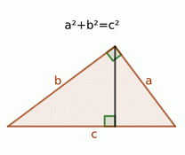

tfontanet.github.io
tfontanet.github.io

Manuel utilisé en classe : Transmath 4ème (Nathan, Edition 2016).
Travailler efficacement en mathématiques
Accès à WIMS pour mes élèves
Accès à Aplusix web pour mes élèves (Mode d'emploi - Revoir une session)
Tous les documents ci-dessus sont publiés sous licence GFDL (Copyleft) : Vous pouvez donc les redistribuer ou les modifier, ils sont là pour ça.